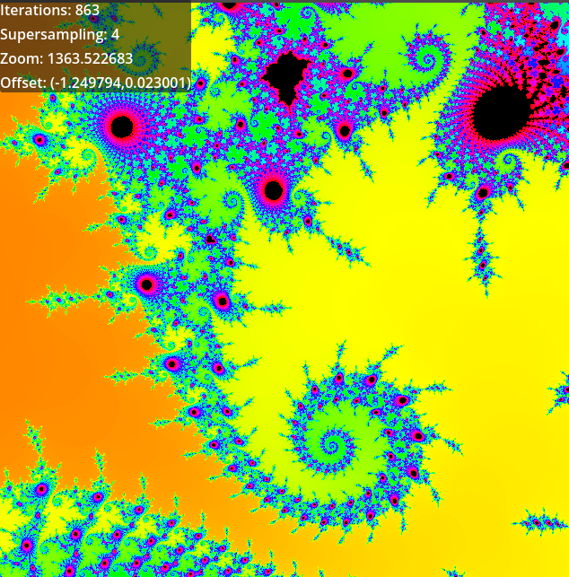
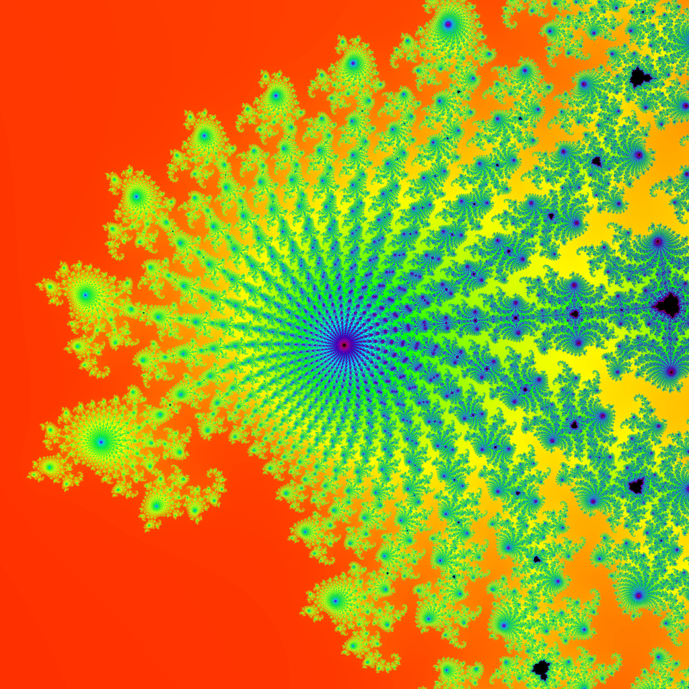
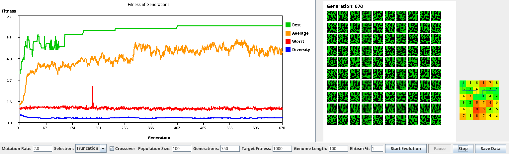

Fractal Renderer Part 1

Technology: Godot Engine
I created a renderer for the Mandelbrot set in Godot Engine using the shading language GDShader. While running as a shader on the GPU made this project fast, I was left unsatisfied with the limited precision I was faced with.
Fractal Renderer Part 2

Technology: C++
Repo: Github
I created this as a follow up to my first renderer so that I might have greater precision. It runs on the CPU, giving me access to much greater precision. It uses a basic png encoder, lodepng, to produce images as output.
Genetic Algorithm Project

Technology: Java, Swing
This was an optional final project for Object Oriented Programming and Design. I worked on a team of two to create an application in Java that would allow the user to set hyperparameters and run a genetic algorithm to solve a simple pathfinding problem.